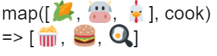
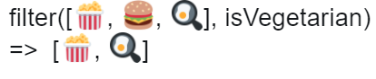
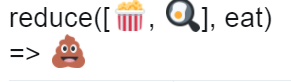

What is an Array?
So far, you have been working with variables that hold value. The integer variables you have set up have held only one number, and the string variables just one long string of text. An array is a way to hold more than one value at time. It's like a items.
Here is some of the functions:
.map (just like filter, map is another higher-order function, also like filter its goes thougth in array BUT unlike filter, map doesn't throw the objects array, instead transform them. Map will include all of item in the array but instead its expects to call back function to return the objects that will put in the new array instead of the original.)

.filter (is a function on the array that accepts another functions, acess argument which we will use to return a new filter vertion of the array. Filter will loop througth each item in array and for each item its going to pass into the go back function to return true or false, telling the filter if this item either or not should be in the new array.)

.reduce (is the multi toolbox on list of transformations, it can be used to express any list transformation, in fact, you can use reduce to implamentnfunctions like map, filter, reduce, find or any other list of transformation.)
